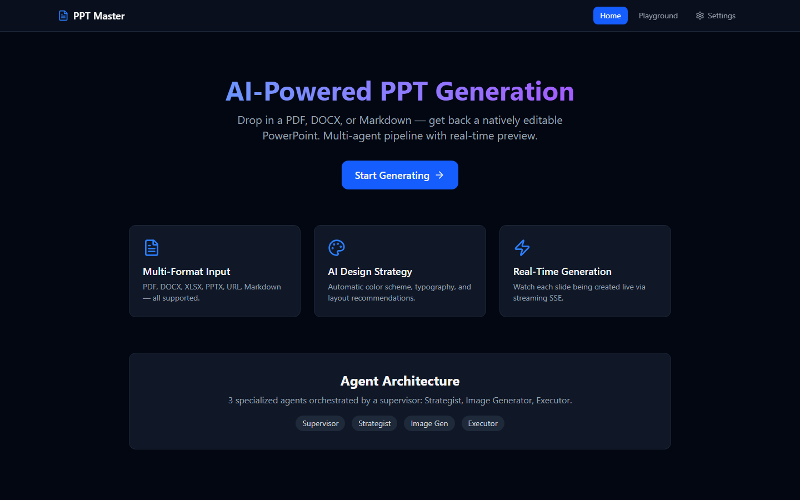

Demo 01 / Documentation Automation
PPT Master
面向“资料到可展示 PPT”的办公内容生成场景，将任务拆成资料解析、大纲规划、页面生成、风格统一和人工确认，可迁移到需求汇报、培训材料和 rollout 文档生成。

资料解析
大纲规划
可控生成
AI-assisted BA Activities
两个 Agent Demo 分别覆盖自动化文档生成和垂直场景数据洞察，体现 AI 在需求分析、流程建模、原型表达、文档整理和可解释推荐中的应用方式。
Demo 01 / Documentation Automation
面向“资料到可展示 PPT”的办公内容生成场景，将任务拆成资料解析、大纲规划、页面生成、风格统一和人工确认，可迁移到需求汇报、培训材料和 rollout 文档生成。

Demo 02 / Data Insight & Explanation
面向考研择校决策场景，将用户画像、院校检索、匹配排序、风险评估和推荐解释组合成智能顾问，可迁移到业务规则筛选、数据洞察和可解释推荐。
/1.png)
BA Value
案例重点不在截图数量，而在于 AI 如何帮助 BA 更快理解材料、生成文档、提出确认问题、组织流程、解释结论并支持验收。
把原始材料、用户输入和业务约束转化为结构化画像、规格和待确认问题。
把复杂任务拆成输入、解析、规划、生成/检索、校验、解释、确认等环节。
通过中间态、确认点、推荐理由和风险提示，降低 AI 黑盒输出的不确定性。